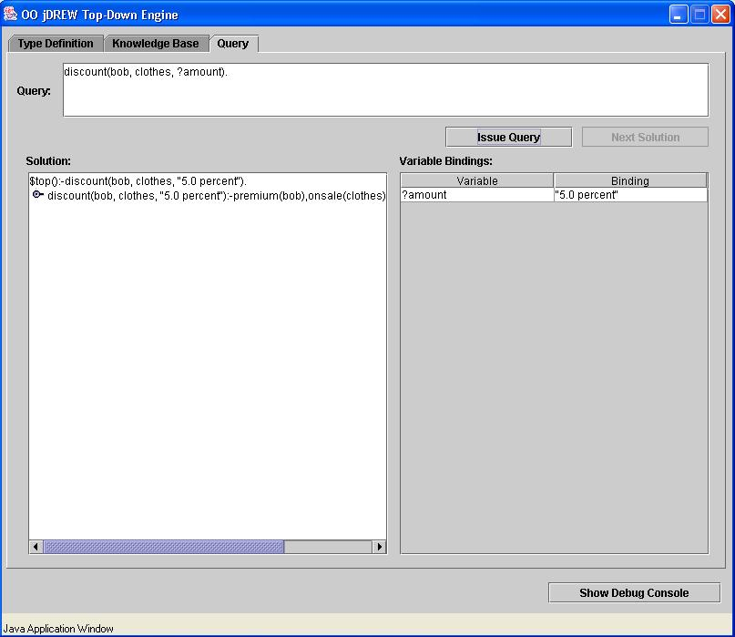
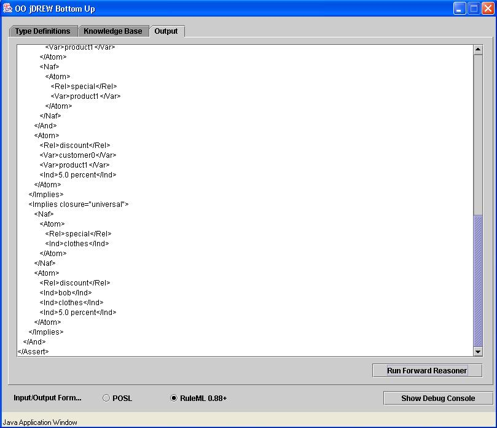

Negation As Failure
Negation-as-failure (Naf) has first been implemented in
OO jDREW TD (version 0.88), and recently introduced into OO
jDREW BU for stratified programs.
For example,
<Assert>
<And>
<Implies
closure="universal">
<And>
<Atom>
<Rel>premium</Rel>
<Var>customer</Var>
</Atom>
<Atom>
<Rel>onsale</Rel>
<Var>product</Var>
</Atom>
<Naf>
<Atom>
<Rel>special</Rel>
<Var>product</Var>
</Atom>
</Naf>
</And>
<Atom>
<Rel>discount</Rel>
<Var>customer</Var>
<Var>product</Var>
<Ind>5.0 percent</Ind>
</Atom>
</Implies>
<Atom
closure="universal">
<Rel>premium</Rel>
<Ind>bob</Ind>
</Atom>
<Atom
closure="universal">
<Rel>onsale</Rel>
<Ind>clothes</Ind>
</Atom>
</And>
</Assert>


Equality
Equivalence individuals are presented with RuleML tag
<Equal></Equal> in OO jDREW BU
For the above example, we define as below:
<Equal>
<Ind>fatherOFtom</Ind>
<Ind>bob</Ind>
</Equal>
<Equal>
<Ind>fatherOFtom</Ind>
<Ind>uncleOFmary</Ind>
</Equal>
the coming statements are:
1: discount("uncleOFmary", clothes, "5.0 percent").
1: discount("fatherOFtom", clothes, "5.0 percent").
1: discount("bob", clothes, "5.0 percent").
2: onsale(clothes).
3: premium("uncleOFmary").
3: premium("fatherOFtom").
3: premium("bob").
4: equal("uncleOFmary",uncleOFmary).
4: equal("fatherOFtom",uncleOFmary).
4: equal("bob",uncleOFmary).
4: equal(fatherOFtom,bob).
while another atom is provided as:
<Atom>
<Rel>special</Rel>
<Ind>clothes</Ind>
</Atom>
less conclusions we will receive:
1: premium("uncleOFmary").
1: premium("fatherOFtom").
1: premium("bob").
2: equal("uncleOFmary",uncleOFmary).
2: equal("fatherOFtom",uncleOFmary).
2: equal("bob",uncleOFmary).
2: equal(fatherOFtom,bob).
3: onsale(clothes).
4: special(clothes).
******
Here is a link to download the extension features of OO jDREW.
|